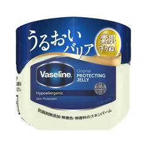

持ち歩いて、乾いた所に足したい人

ヴァセリン
ピュアスキンジェリー 40g
40g
¥185税込・出典掲載価格
選び方と声
- 選ぶ条件：バッグや洗面台に置いて、鼻の入り口・唇・かかとなど乾く所に少しずつ足したい人。商品ページの説明では、肌表面をコーティングして水分の蒸発を防ぐ。防腐剤無添加・無着色・無香料で、成分はワセリン・酢酸トコフェロール・BHT。
- ガルでは、ワセリンは保湿というよりふた目的で、前に何かで保湿するもの、という声が一番多かった。口コミには、冬に鼻の入り口が乾いていたが、お風呂上がりと朝に綿棒で少し塗るようにした、という声があった
気になる声気になる点：冬は固くなる。塗りすぎるとベタつき・テカリが出る。缶なので指を入れたくない人は綿棒で取る
販売価格・容量・送料はリンク先でご確認ください